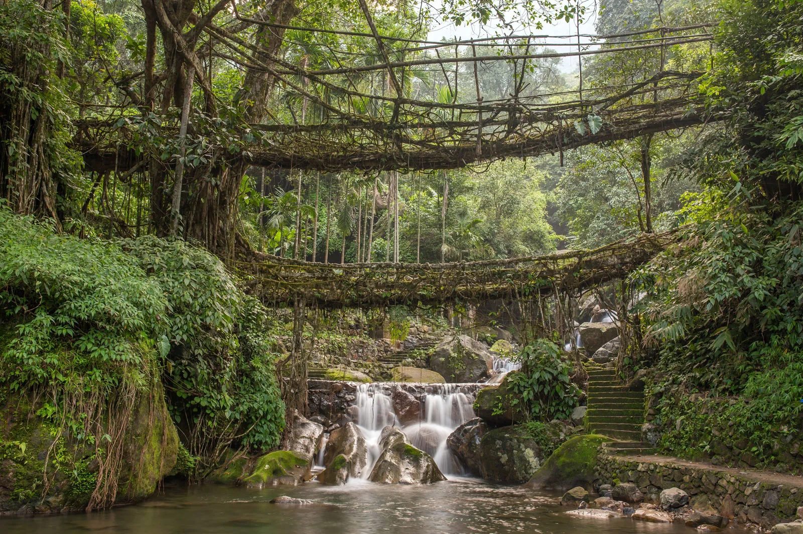
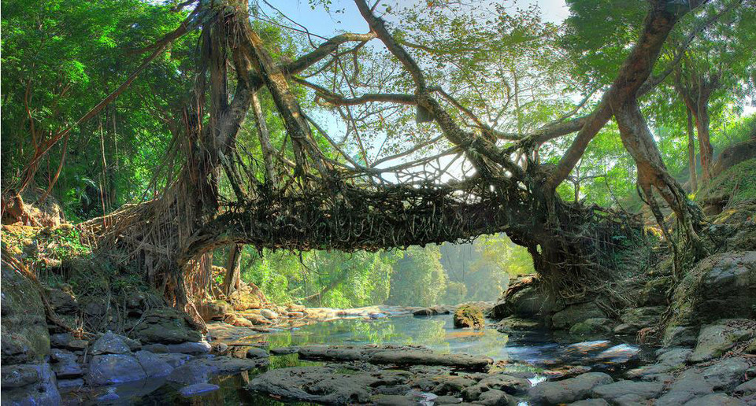
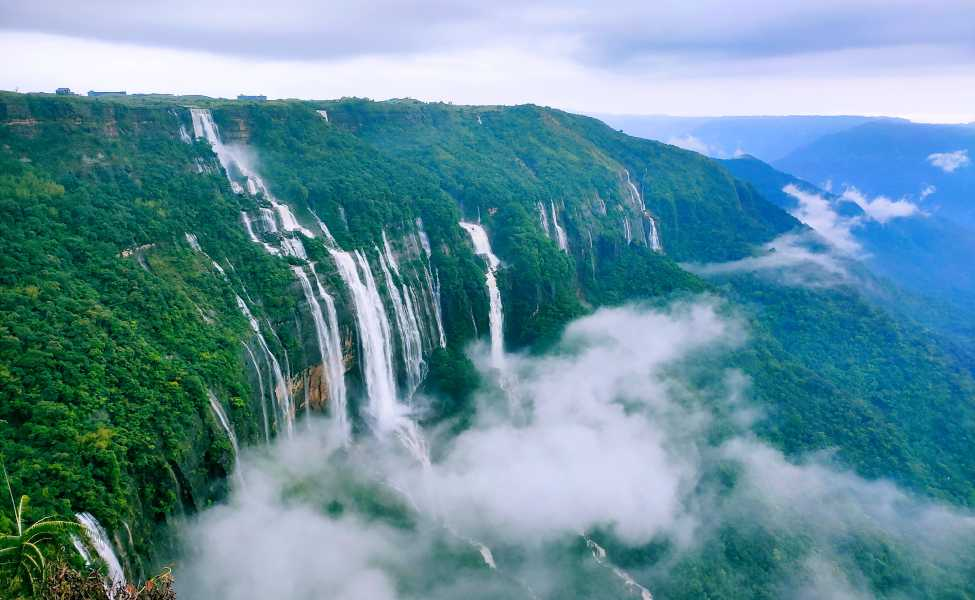
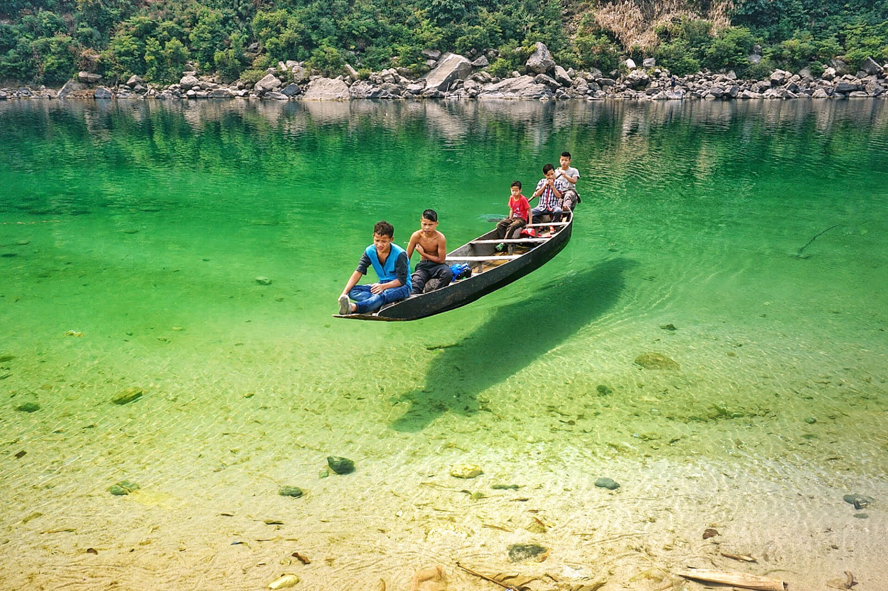

Explore the mystical landscapes, living root bridges, and vibrant Khasi culture of Northeast India's most enchanting state
Explore PackagesEach season offers a unique experience — from misty monsoon magic to crisp winter clarity.
Pro Tip: September & October offer the best balance — greenery remains, waterfalls are still active, and trails dry up just enough for safe trekking!
From the wettest place on Earth to Asia's cleanest village, Meghalaya offers unforgettable experiences
 Top Rated
Top Rated
Famous as one of the wettest places on Earth, Cherrapunji boasts spectacular waterfalls like Nohkalikai Falls (India's tallest plunge waterfall) and unique living root bridges. The Mawsmai Cave offers an adventurous underground experience.
Explore More Cultural Hub
Cultural Hub
The capital city known as "Scotland of the East" offers colonial charm, vibrant markets, and nearby attractions like Elephant Falls and Shillong Peak. Don't miss the Don Bosco Museum for insights into Northeast India's tribal cultures.
Explore More Eco Village
Eco Village
Voted as Asia's cleanest village, Mawlynnong offers picturesque bamboo huts, beautiful gardens, and the famous Sky View platform offering panoramic views of Bangladesh plains. The living root bridge at Riwai village is a short walk away.
Explore More Natural Wonder
Natural Wonder
Famous for its crystal-clear Umngot River where boats appear to float in mid-air. The India-Bangladesh border crossing here offers unique photo opportunities. The nearby Shnongpdeng village is perfect for camping and water sports.
Explore More Unique
Unique
Officially the wettest place on Earth, receiving over 11,000mm of rain annually. Witness unique adaptations like grass bridges and visit the impressive Mawjymbuin Cave with its stalagmite formations resembling a Shiva lingam.
Explore More Adventure
Adventure
Home to the famous double-decker living root bridge, accessible via a challenging 3,000-step hike through lush rainforest. The natural pools at Rainbow Falls make the strenuous trek worthwhile for adventurous travelers.
Explore More Scenic
Scenic
Known as the "End of Hills," this spectacular canyon offers breathtaking views of deep gorges and rolling hills. The rustic village of Rasong provides a glimpse into traditional Khasi life away from tourist crowds.
Explore MoreCarefully curated experiences to help you discover the best of Meghalaya
 Top Rated
Top Rated
Experience the beauty of Shillong with guided tours and adventure activities.

Limited OfferDiscover the natural wonders of Cherrapunji with our exclusive tour package.
Book Now
Cleanest VillageExplore the cleanest village in Asia with our special tour package.

Nature EscapeEnjoy a serene retreat in Mawsynram, the wettest place on earth.

Scenic BeautyExperience the crystal-clear waters of the Umngot River in Dawki.
 Popular Choice
Popular Choice
Witness the majestic Nohkalikai Falls with our exclusive package.
 Family Friendly
Family Friendly
Explore the beautiful Elephant Falls with our guided tours.
 Best Seller
Best Seller
Comprehensive tour covering Shillong, Cherrapunji, Mawlynnong, and Dawki with all major attractions included.
Book Now Adventure
Adventure
Challenging trek to Nongriat's double-decker root bridge with visits to Rainbow Falls and other natural wonders.
Book Now
Explore Shillong's colonial charm, nearby waterfalls, and cultural attractions with comfortable stays.
Book Now Seasonal
Seasonal
Witness the spectacular waterfalls at their mightiest during peak monsoon season (June-September).
Book Now
Boat rides on crystal-clear Umngot River combined with camping at Shnongpdeng village.
Book Now Premium
Premium
Guided photography expedition covering all scenic locations with professional tips and golden hour shoots.
Book NowDiscover the rich heritage of Meghalaya's indigenous communities
The Khasi people follow a unique matrilineal system where property and family names are passed through the mother's line. The youngest daughter (Ka Khadduh) inherits the ancestral property and cares for aging parents.
Meghalaya's cuisine features smoked meats, bamboo shoots, and fermented foods. Must-try dishes include Jadoh (rice with meat), Dohneiiong (pork with black sesame), and Tungrymbai (fermented soybean paste).
Traditional instruments include the bamboo flute (Tangmuri) and drums (Ksing). The Wangala harvest festival features vibrant dances celebrating the Sun God. The Shad Suk Mynsiem dance symbolizes purity and joy.
The living root bridges of Meghalaya are remarkable examples of bio-engineering. Created by guiding rubber tree roots across rivers, these bridges grow stronger over time, some spanning over 50 feet and lasting centuries.
Khasi culture preserves history through rich oral traditions. The "Ki Nongsaiñ Hima" (priestesses) recite genealogies and myths during ceremonies. The Khasi language has its own script and is recognized in the Indian constitution.
Meghalaya's sacred groves (Law Kyntang) are preserved forest patches protected by religious beliefs. These biodiversity hotspots conserve rare flora and fauna while maintaining the ecological balance of the region.
Discover the geographical diversity and key attractions across the state
What our visitors say about their journey through Meghalaya
Meghalaya was like stepping into a fairy tale! The living root bridges were absolutely magical, and our guide from MeghalayaExplorer made sure we experienced authentic Khasi culture. The monsoon waterfalls were worth every slippery step!

As a photographer, Meghalaya offered endless breathtaking frames. From the crystal-clear waters of Dawki to the misty valleys of Cherrapunji, every moment was picture-perfect. The photography tour package was worth every rupee!

Our family trip to Meghalaya was unforgettable. The kids loved Mawlynnong village and its cleanliness lessons, while we adults marveled at the engineering of living root bridges. The homestay experience gave us genuine Khasi hospitality.